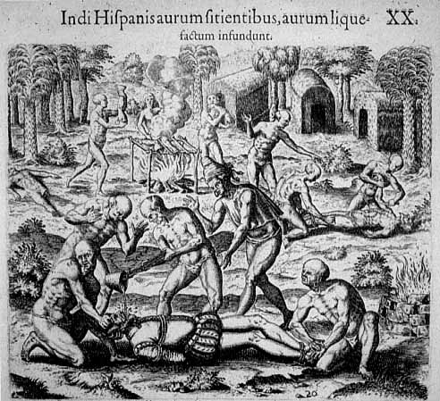
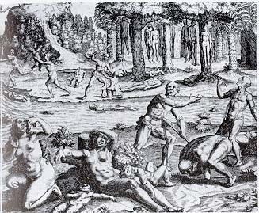
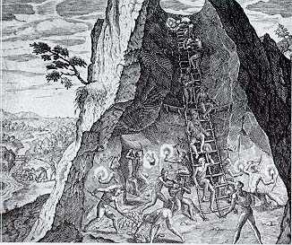
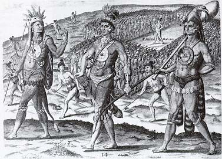

Theodor de Bry y la representación artística del Nuevo Mundo
Durante unos doscientos años, un buen número de europeos, especialmente europeos protestantes, vieron la historia y los pueblos del Nuevo Mundo a través de los ojos de un hombre, Theodor de Bry. A través de de Bry descubrieron la apariencia y las costumbres de los indios americanos y obtuvieron descripciones pormenorizadas de los primeros encuentros entre los europeos y los pueblos autóctonos del Nuevo Mundo.
Las Casas, De Bry y la batalla política entre cristianos y protestantes:
Al mismo tiempo que la lucha entre la Europa católica y la protestante alcanzaba su punto culminante y Felipe II preparaba su gran Empresa de Inglaterra surgieron múltiples traducciones de Las Casas. Esta proliferación de traducciones de Las Casas culminó con la edición alemana preparada por Theodor de Bry en 1597 y publicada independientemente. Ilustrada con dieciséis láminas, dejaba constancia con terribles pormenores de las atrocidades llevadas a cabo por los españoles en la conquista de las Indias. Muchas de estas ilustraciones americanas se inspiraban, en realidad, en representaciones de diversas matanzas y crueldades perpetradas en el transcurso de los conflictos religiosos de la Europa de mediados del siglo XVI. Es decir, la falta de humanidad que mostraron los europeos entre sí se vio traducida al escenario americano.
Ejemplo de la codicia española:
"Vierten los indios oro fundido en boca de los españoles para saciar su cudicia".

Los indios, movidos a cólera y envidia contra los españoles debido a la desmedida crueldad y tiranía, ansí como a la cudicia déstos, vertieron oro fundido en boca de cuantos pudieron atrapar, pero sobre todo de los capitanes, a quienes ataban pies y manos y tumbaban al suelo y arrancaban la cudicia pronunciando estas palabras: Come oro, come oro, insaciable cristiano. Sí, y para más tormento y humillación cortaron a varios, aún vivos, los brazos, y las piernas a otros, con instrumentos afilados hechos de piedra y los pusieron sobre las brasas y los comieron.
de América (1590-1634). Theodor de Bry. Madrid, Siruela, 1992.
A continuación, tres dibujos de una serie realizada a base de las descripciones de Fray Bartolomé de las Casas de las atrocidades cometidas en el Nuevo Mundo en su Brevísima relación de la destrucción de las Indias. Al ser distribuidos con gran éxito por toda Europa, estos dibujos tuvieron un papel importante en el desarrollo de la llamada "Leyenda Negra," que en las palabras de Carlos Fuentes pintó a España como "brutal, sanguinaria y sádica, empeñada en torturar y asesinar a sus súbditos coloniales, en tácito contraste, sin, duda, con la pureza inmaculada de los colonialistas franceses, ingleses y holandeses".
Escena de una matanza durante la conquista.
 Trabajadores indígenas en una mina de plata.
Indígenas defendiendo sus tierras.